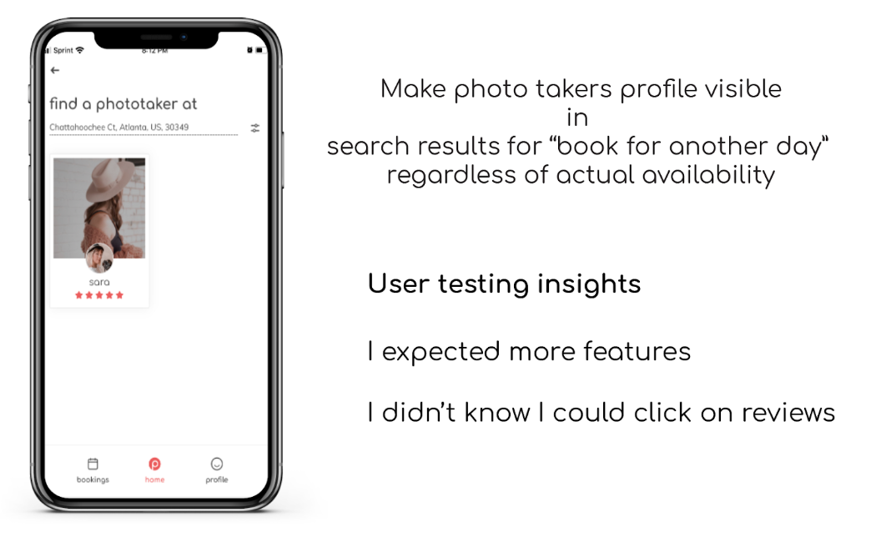

Pelooc
Mobile Application
Agenda
Group Project
Salla Cho
Greta Luna
Cindy Primm
Pelooc is a peer-to-peer application and on-demand-photography platform, like Uber for photographers.
Sara Avans, P.O of Pelooc asked us to redesign their current application flow and think of solutions for better marketing and visibility. Our team used research, iterations and design process to produce a working MVP prototype in 3 weeks.
Thank you for taking the time to check out my designs.
Discover & Research
We met with Sara Avans and discussed the current application and her needs and expectations. It quickly came clear that we have a lot of work to do and very little time to do it. But you know what? Sounds like a great challenge to me!
After understanding what this application is all about and getting our list of
to-do's (below), it was time to get to work.
In order to fully understand these requests and to validate any unidentified problems, I suggested
we test the current app relating to the problems the P.O. identified.
Together we brainstormed the tasks users would take and after we were happy with the tasks, my role was to take notes on test users comments and to collect the data for iterations for later.
We tested the app with target users (people most likely to use the app) and general users (aka users that are not necessarily part of the target audience for Pelooc, but can gives us valuable feedback on how the app feels and functions.)
After testing, we did affinity mapping to find common themes that could be used to inform our design solutions. I was responsible for collecting all the data and create slides that would seamlessly show our design process (below).


Insights
As seen above, during testing our users brought to light additional problems that were not a part of the original 9 problems the product owner had in mind.
Due to budget and time constrains, we couldn’t solve everything that our P.O wanted and had to move all needs not met to the backlog, to be completed in the future once the top priority needs were met.
As someone who wants to provide visible results in a quick turnaround, I've been challenged with the research side of UX.
During each UX project I've done, I've been challenged with the "WHY"; why research is so important in order to provide the
best work for my clients. I have learned to enjoy it more than I first thought I would. Way to go, me!
We decided to use my idea of the photolover search page in our final designs and together built the rest of the frames according to user testing and P.O's needs. (below) I was in charge of designing the sign up process for both Photolover and Phototaker.
The application didn't have clear instructions on how it works, unless the user visits
the actual website. This gave me an idea of a easy, 4-step instruction slides showing
the user how each side of the app works. For now these instructions would be accessible
during sing up process. (below)
Design
Starting personally my favourite part of UX - sketching - we each first sketched possible examples of the pages and frames photolover will see when searching for a phototaker.
We then came together to compare our ideas and iterate them further.
Wireframes
this point we sketched Second user testing showed some promising results as our 6 test users were now able to really understand the different navigational elements this app still needed.
Next Steps